叶青武汉日记：第一个隔离点关闭了！
原文链接 备份链接 岛语 非常时期，武汉成了全国人民挂念、祈福的城市。封城后，武汉人民的真实生活是什么样？ 武汉在发生哪些变化？ 正和岛自1月26日起特别推出“叶青专栏”。叶青是一位定居武汉40年的市民，也是一名学者和官员。在过往多期的专 …
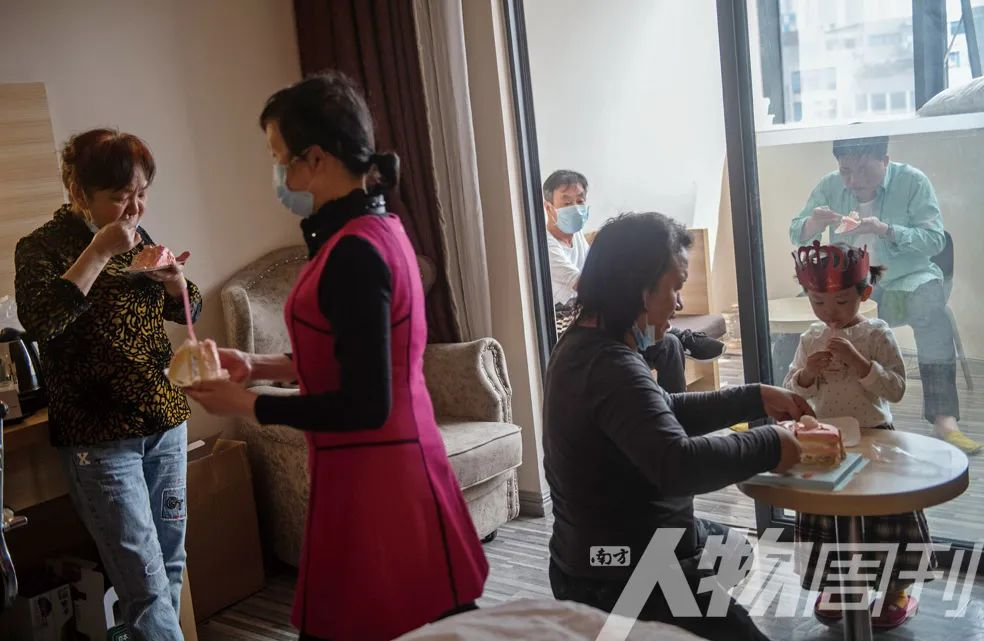
3月16日，女儿彤彤三岁生日，滞留在酒店的周剑峰特意订了一个蛋糕，一家人给女儿过一个特殊难忘的生日
疫情暴发后，番禺城市便捷酒店成了不少隔离者和湖北客临时的“家”，至今，酒店内还滞留着超过110位湖北人
本文首发于南方人物周刊2020年第7期
图 | 南方日报记者 肖雄
文 | 南方日报记者 徐勉 实习记者 顾翠栋
编辑 | 方迎忠 郑洁
全文约1849，细读大约需要4分钟
“祝你生日快乐，祝你生日快乐……”
3月16日，广州番禺城市便捷酒店607号房内，吹灭蛋糕上的蜡烛，彤彤三岁了。武汉人周剑峰用手机拍下这个画面，发给仍在广州市第八人民医院内的妻子。
1月，周剑锋带着亲戚两家来广东旅行。不料，疫情暴发，两家十口有五人先后被确诊。经过多日治疗，五人陆续治愈。解除医院隔离后，周剑锋带着两家人住进了隔离酒店，等待家人出院。

来自武汉的周剑锋与表哥两家10个人年前来广州、珠海、澳门旅游，在广州待了两天，陆续有5人发热被确诊为阳性，如今还有3名家人治愈后在广州市第八人民医院接受14天隔离
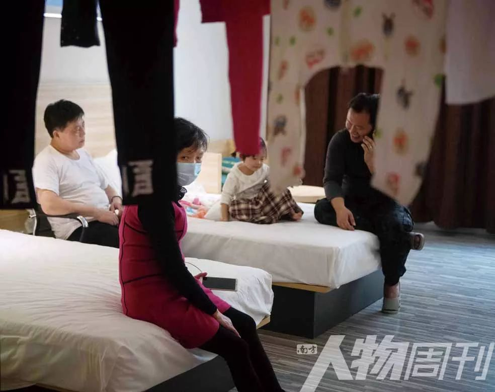
被困五十多天后，周剑峰一家人显得很无奈，不管是从费用上还是心理上，现在只想能尽快回家
疫情暴发后，番禺城市便捷酒店成了不少隔离者和湖北客临时的“家”，至今，酒店内还滞留着超过110位湖北人。
2月10日，湖北开始上网课。同楼层的湖北旅客大何一家为了女儿的网课忙得不可开交，为此还特意买了投影仪。课间休息时跟着视频练习舞蹈，妻子就陪着女儿一起跳。

单位复工后，何杰坐在阳台开视频会议，女儿则坐在房间里上网课
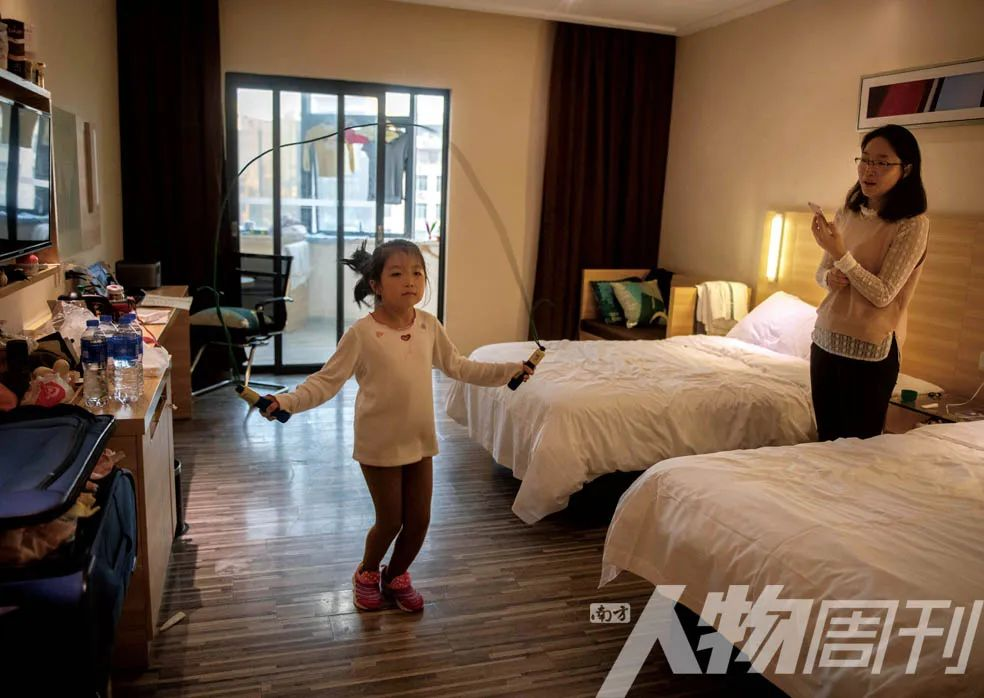
小冉在一旁练习跳绳，给学生上完网课的王文利连忙给女儿计时
大何一家1月21日自驾来穗旅游，次日进入酒店隔离。“宝墨园、二沙岛、白云山……我们都去了一趟。”解除隔离之后，一家人把广州景点游了个遍。和大多数滞留的湖北人一样，大何一边熟悉广州的天气，一边感受这座城市的温暖。元宵节那天，他们吃到了钟村街道办送来的汤圆。
滞留的焦虑，成了酒店的底色。梅姨很发愁，她3月7日结束隔离，住进了这家酒店，垫付的医疗费、每天160块钱的住宿费，让她有些捉襟见肘。由于隔离期间没有打卡，她的健康码还是黄色，返汉申请表也还没获批。
相较于梅姨的担忧，年轻的周剑锋则淡然很多，妻子再过两天就解除隔离了，如果一切顺利，他打算3月20日回家。周剑锋把女儿吹蜡烛的照片发在朋友圈，“这是很值得纪念的一天。”
午间，酒店五楼的角落里二胡声一响。同楼的住户就知道，老易又练琴了。
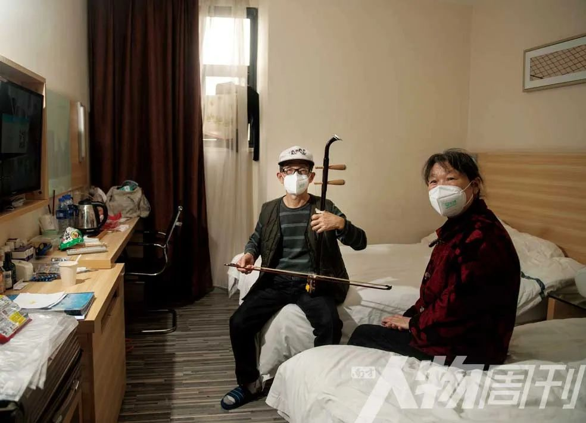
来自湖北随州的老易和老伴本是来广州看望儿子，遇上疫情，计划被完全打乱。当年是村里文工队成员的他随身带着二胡，多少可以靠它缓解沉闷单调的酒店隔离生活
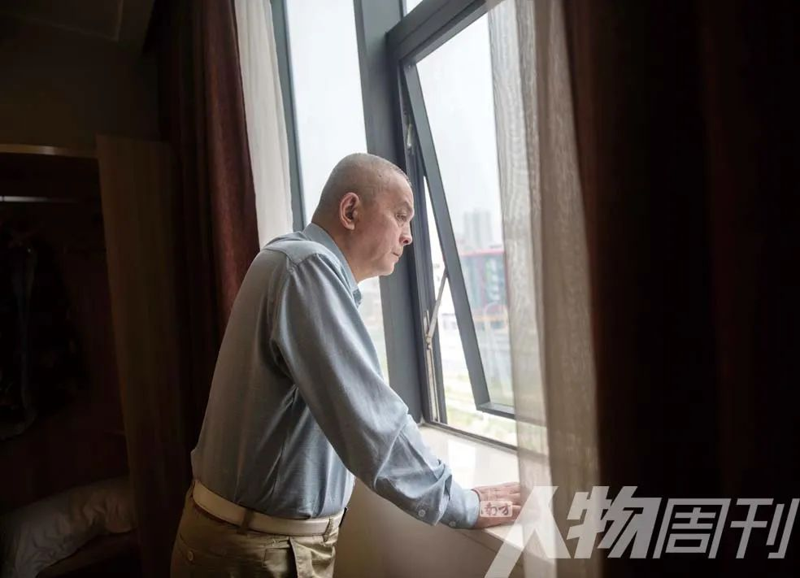
在广东经商31年的王声汉因经营不善破产，今年想回武汉投靠亲人。身无分文的他成了“流浪汉”。疫情期间，他辗转住进了湖北人在广州的隔离酒店，如今靠好心人救济度日
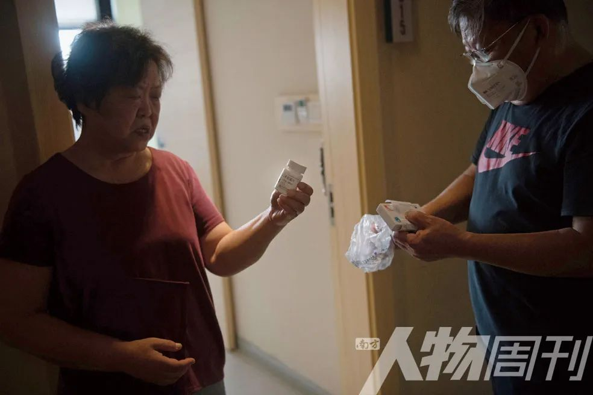
马节生跑了好几家药店都没买到老伴的糖尿病药，只剩几片药的谢静显得很沮丧
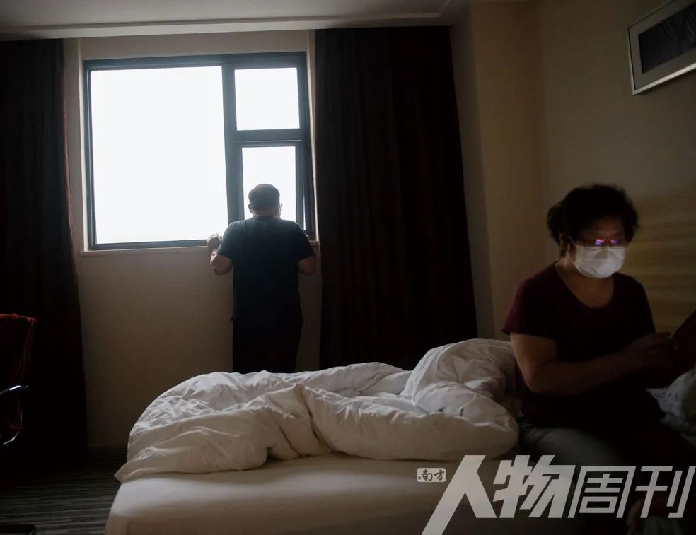
闷在房间的谢静戴着口罩坐在床前看新闻，老伴马节生走到窗前眺望着远方。她无奈地向记者诉苦道，住在隔离酒店，虽然大家都是老乡，但都不讲话。坐电梯时，戴着口罩还把脸转过去
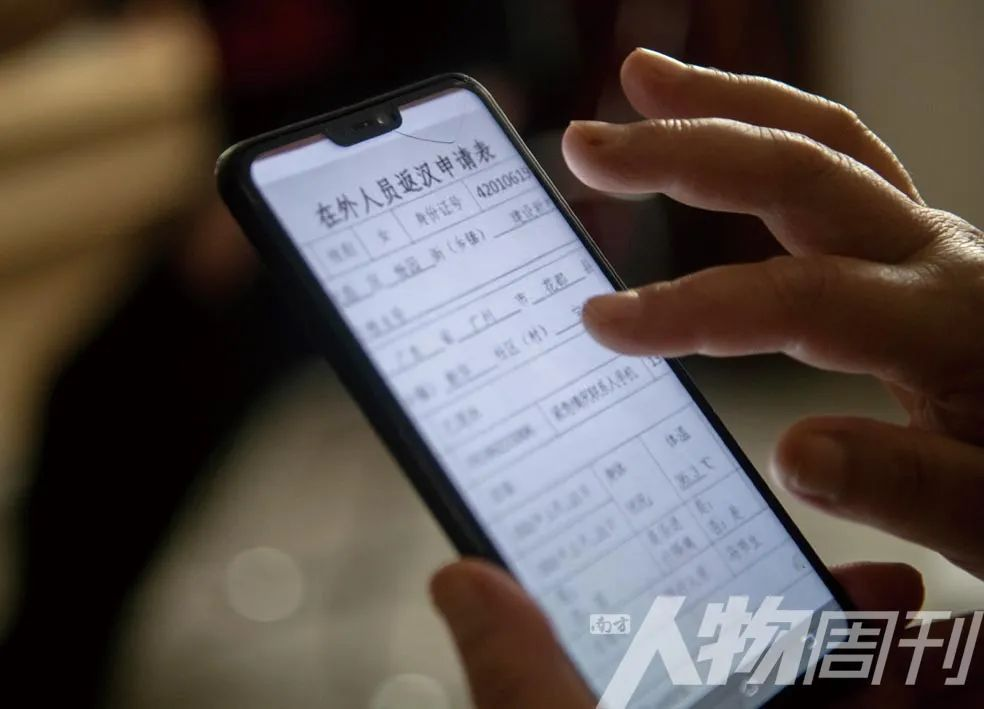
被困四十多天的谢静最近拿到了在外人员返汉申请表，她和老伴准备第二天坐高铁回武汉
“流浪歌，最近他老是拉这曲子。”陈姨望着老伴叹气。两口子春节来广州探亲，谁知却回不去湖北。
“方舱医院都关门了，我们是不是可以回家了？”今年春节，武汉旅客向雪和表妹两家人因旅行滞留广州，在酒店一住就是五十多天。3月初，她开始到处打听“返汉攻略”。
根据武汉市各区发布的返汉流程，“一边准出，一边准入，就能回去。”向雪如此总结。这些天她拿到了三份证明：隔离证明、健康证明和返汉申请表。
3月11日上午，向雪一家踏上了返乡的高铁G66，这辆开往北京途经武汉的高铁，结束了长达51天的广州“流浪”生活。
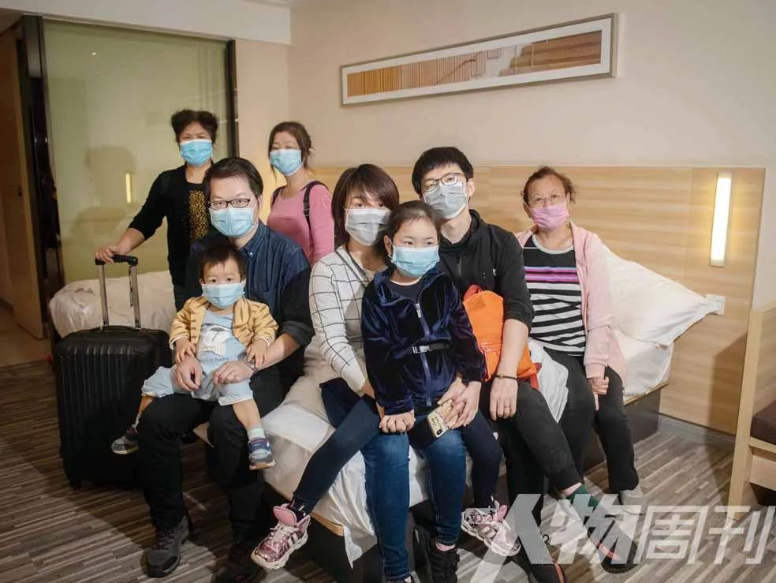
春节前，来自武汉华中科技大学的向雪和表妹两家人相约来广州旅行过年，却因为疫情滞留在酒店
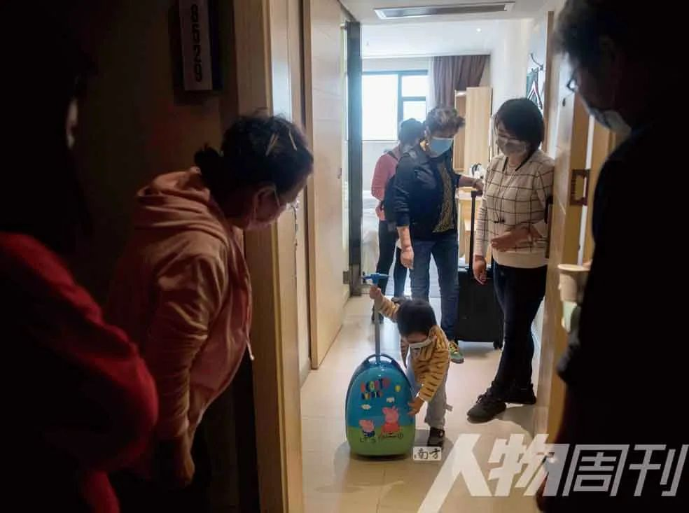
向雪一家人收拾好行李准备退房，隔壁房间的同乡前来与她们告别
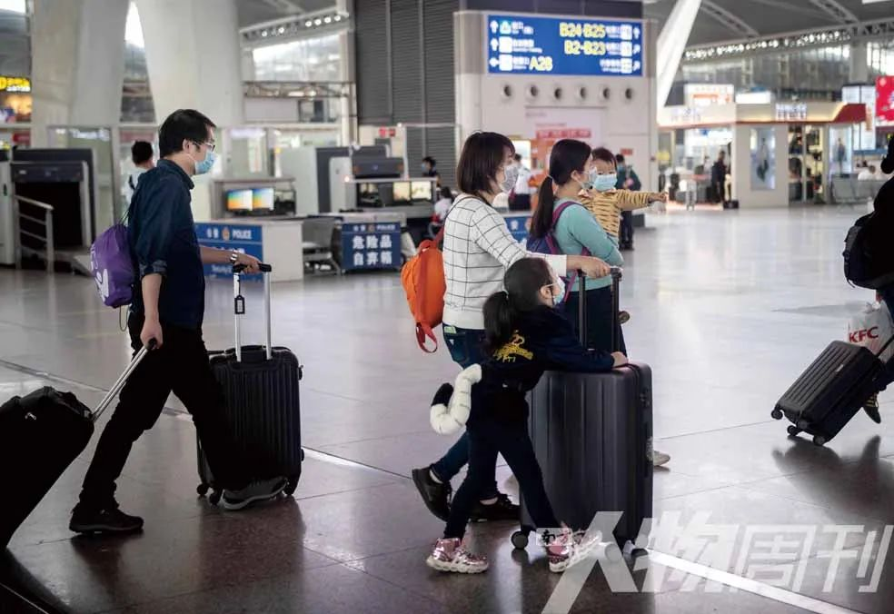
广州南站，结束在广州五十多天的滞留，向雪和家人终于坐上回武汉的高铁
出发前，向雪房门外被老乡围得水泄不通，她一边把锅碗打包交给快递员，一边回答湖北老乡们的问候。
“你们要走了吗，回去吗？”
“对，回家，回武汉。”向雪答道。


中国人物类媒体的领导者
提供有格调、有智力的人物读本
记录我们的命运 · 为历史留存一份底稿

往期精选


点击“阅读原文”即可订阅和购买最新杂志
原文链接 备份链接 岛语 非常时期，武汉成了全国人民挂念、祈福的城市。封城后，武汉人民的真实生活是什么样？ 武汉在发生哪些变化？ 正和岛自1月26日起特别推出“叶青专栏”。叶青是一位定居武汉40年的市民，也是一名学者和官员。在过往多期的专 …
原文链接 备份链接 疫情蔓延时，在无数依然相爱或曾经相爱的人眼里，只要能够平安，就是最好的庆祝 文 |《财经》特派武汉记者 刘以秦 编辑 | 余乐 2月14日，这是很多人眼里一个相爱的人相聚的日子。截止2月14日上午11点，武汉新冠肺炎 …
原文链接 备份链接 《战疫口述记》，是燃财经在新型冠状病毒肺炎期间推出的特别栏目，记录疫情亲历者的观察和感受。本文为第3篇，查看前2篇请点击《农村这样防肺炎》《我在武汉战肺炎》。 作者 | 苏琦 金玙璠 孟亚娜 唐亚华 孔明明 魏佳 …
原文链接 备份链接 *************▲************* 四川省巴中市巴州区，一辆鄂A车牌（武汉）轿车的车窗上，贴着红岩社区加盖公章的证明，称车主无感冒发烧现象，且正在家自行隔离。 （杜茂林/图） 全文共*4201*字， …
原文链接 备份链接 2019年上半年占据湖北省GDP约五分之一的112家省内上市公司，目前复工情况各异。部分公司影响不大，但也有企业收入面临较大下滑风险 文丨《财经》记者 张建锋 王颖 张欣培 刘以秦 编辑丨陆玲 3月16日，《财经》记 …